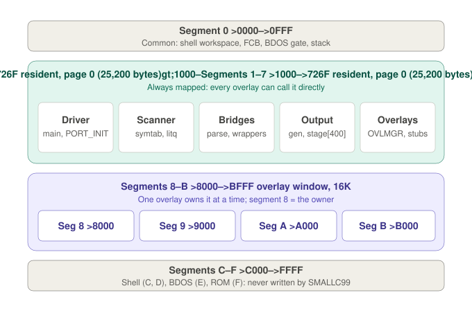
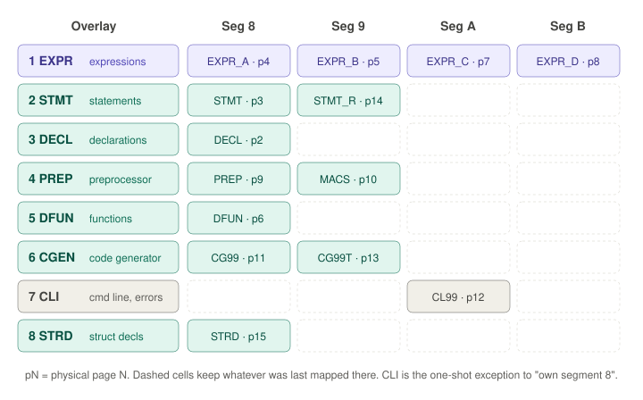

SMALLC99: a native C compiler for the TMS99105
SMALLC99 is a C compiler that runs on a TMS99105 single board computer, not on a PC. It compiles C to TMS9900 assembly, which the SBC's own assembler (R99) and linker (LINK99) turn into a program you can run.
Source code on GitHub The SBC hardwareA compile on the SBC
[TOOLS]%SMALLC99 PTRTEST -V SMALLC99: compiling PTRTEST.C -> PTRTEST.A99 SMALLC99: wrote PTRTEST.A99 [TOOLS]%R99 PTRTEST [TOOLS]%LINK99 PTRTEST.R99 IOLIB99.LIB [TOOLS]%PTRTEST ... tests: 44 passed: 44 failed: 0 ALL POINTER TESTS PASSED
What it supports
SMALLC99 descends from J. E. Hendrix's Small-C 2.2 and extends it well beyond the classic subset:
- Structures and unions:
.and->, nesting, member arrays, self-referencing lists,sizeof(struct tag). - Multi-dimensional arrays of up to five dimensions, including arrays of pointers and arrays of structs.
- Multi-level pointers up to
int ****p, with pointer arithmetic scaled by element size. char,int,unsigned charandunsigned inttypes.- The full C operator set, and every control statement including
switchandgoto. - Function pointers, recursion and a preprocessor with
#define,#include,#ifdefand#asm. - Error reports with the line number and source line.
287 runtime checks covering the core language, structs, pointers and arrays all pass on the real hardware.
How a big compiler fits in 64K
The TMS99105 can address only 64K, and the compiler is much larger than that. The SBC has a custom memory mapper giving 1MB of RAM in 4K pages. SMALLC99 keeps a small resident core always mapped, and swaps eight overlays through a 16K window as it works:

| Overlay | Does |
|---|---|
| EXPR | Expressions, operators, calls, member access and pointer scaling |
| STMT | Control flow and local declarations |
| DECL | Global variables and their initial values |
| PREP | The preprocessor |
| DFUN | Function headers and parameters |
| CGEN | Code generation into TMS9900 assembly |
| CLI | Command line and error reports |
| STRD | Struct and union declarations |

Overlays never call each other directly. They go through resident trampolines that save the caller, map in the callee, and restore the caller afterwards. The mapper hardware is documented in the TMS99105 SBC paged memory system repository.
Related
- Small C Plus for the TMS9900/99000, an earlier compiler with floating point support.
- R99 relocating assembler and LINK99 linker
- BDOS for the TMS9900 and the Small Shell